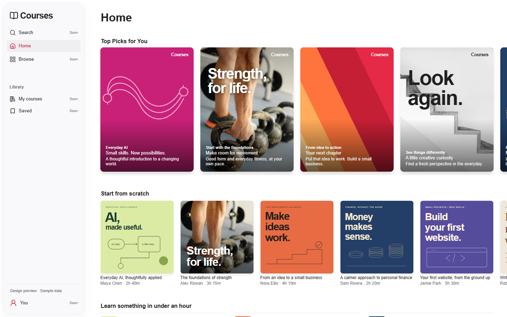
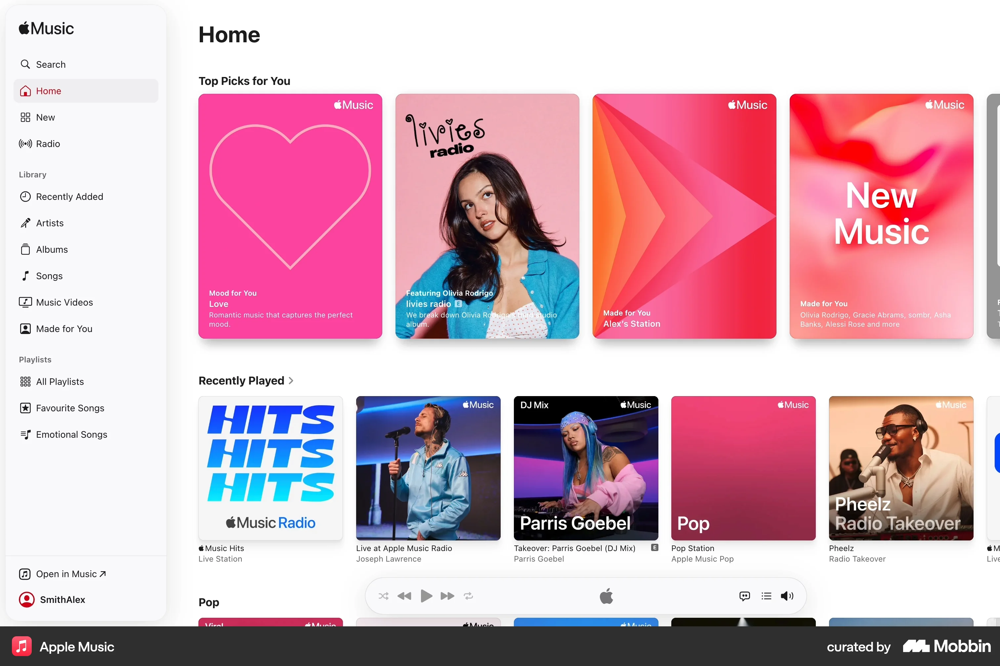

The saved Apple Music Home (VIS-07) and the actual Courses screen share a 1440 × 903 comparison area. The Mobbin footer is outside this area. This is a local review artifact, not an application route.

